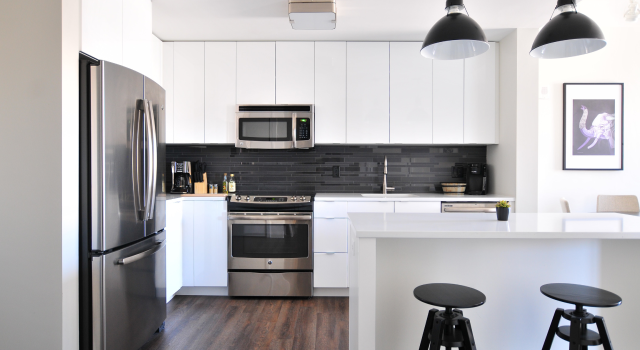
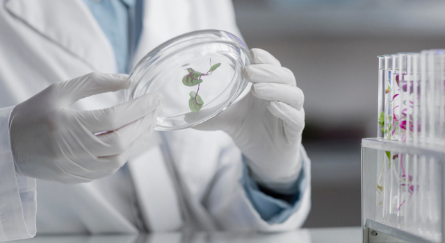
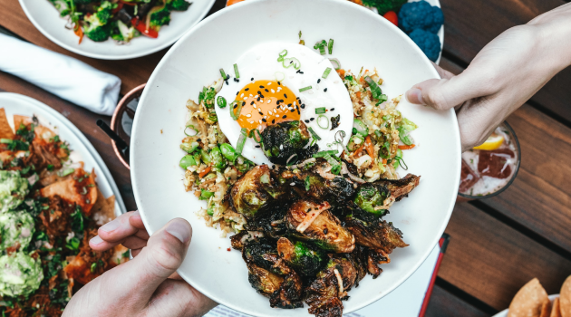
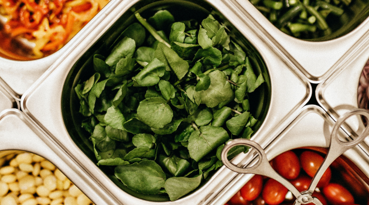

세스코솔루션
SOLUTION
통합해충방제
1:1 맞춤 통합방제솔루션 발생 장소의 환경적 요인을 전문가가 정확히 진단, 1:1 통합 맞춤 방제 솔루션을 제공하여 해충 문제를 해결해 드립니다.
-
관리시스템해충인프라 기반 솔루션
-
컨설팅해충 전문가 컨설팅
-
분석보고실시간 온라인 보고 시스템
-
이물분석신속한 클레임 처리 가능
2,193가지 노하우로 진행 위생문제와 경제적 손실를 일으키는 해충을 맞춤 방제솔루션을 통해 고객의 생활공간이 청정공간이 되도록 지켜드립니다.
세스코 통합해충방제 솔루션 해충방제 서비스 컨설턴트가 해충방제에 대한 맞춤 방제솔루션을 제시합니다.
-
- STEP01사전조사 및 진단
- 문제 해충의 종류 및 생장 주기, 서식지, 성별파악 침입 및 이동경로 파악
-
- STEP02처방
- 세스코 IPM 기술연구소에서 자체 개발 생산된 1:1 맞춤 방제 약제 시스템을 적용
-
- STEP03초기 집중퇴치 서비스
- 처방된 약제의 투약 및 방제솔루션 적용 및 시설 보완 컨설팅
-
- STEP04정기관리 서비스
- 지속적인 문제 해충 현황 파악으로 해충 재발 시 신속한 무료 출동
통합이물분석
국내 유일, 이물전문 분석센터 제품에 혼입된 이물의 실체를 명확히 밝혀 혼입 원인 규명 및 재발 방지 대책을 구립할 수있도록 지원드리겠습니다.
-
동물성 이물곤충, 동물사체 등
-
식물성 이물식물조직 등
-

광물성 이물금속, 조각 등
-
기기 분석GC분석 등
-
생물학 분석현미경 검사 등
-
화학적 분석화학 등 반응검사
세스코 이물분석이 필요한 이유 30여 가지 과학적 연구 기법과 전문 분석 장비를 통한 원스탑 통합이물분석 서비스로 피해를 줄이고 예방해 드립니다.
세스코 통합이물분석 서비스 이물분석 전문가 그룹이 30여 가지 정밀 분석 시스템을 가동하여 제품에 혼입된 이물의 실체를 명확히 분석합니다.
-
STEP01분석의뢰
홈페이지 접수
-
STEP02샘플확인
테스트 항목 결정
-
STEP03분석상담
항목 및 비용 안내
-
STEP04분석진행
원스탑 분석 진행
-
STEP05결과진행
시험성적서 발송
식품안전
음식점과 신선함을 지키는 약속 믿을 수 있는 깨끗한 환경은 업장을 방문하는 고객들에게 또 다른 선택 기준이 되었습니다.
-
위생진단위생 솔루션
위생진단 -
시험분석위해요소분석
자가품질분석 -
식품안전요소HACCP 교육
식품전문 교육 -
컨설팅식품안전
HACCP 컨설팅
세스코 서비스가 특별한 이유 다양한 업종별, 환경별로 발생 가능한 문제에 대해 고객별 맞춤형 솔루션을 제시해 드릴 수 있기 때문입니다.
세스코 토탈 식품안전 솔루션 세스코의 축적된 위생활경 노하우와 식품 안전 연구소의 첨단 시스템 운영으로 솔루션을 제공합니다.
-
STEP01외식업장의 사업을 돕는 식품안전 컨설턴트가 찾아갑니다.
-
STEP02식품안전 위해요소를 철저히 진단합니다.
-
STEP03맞춤형 컨설팅을 통해 사업장이 업그레이드 됩니다.
-
STEP04다양한 프로그램으로 깨끗한 맛집으로 알려지게 됩니다.